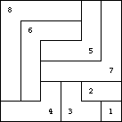
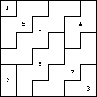
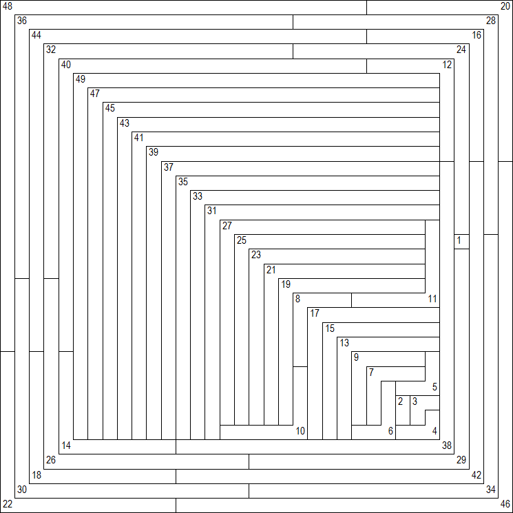
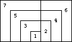
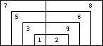
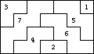
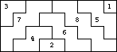

The first solution n=1 k=1 is trivial.
The next solution is n=8 k=6. The following pictures show polyominoes of length 1-8 tiled inside a 6 x 6 square, one with L polyominoes, and the other with W polyominoes:
|  |  |
The next solution is n=49 k=35. In August 2011, Berend van der Zwaag found this solution of L's:
|  |
Can anyone find a W for this case?
|  |  |
|  |  |